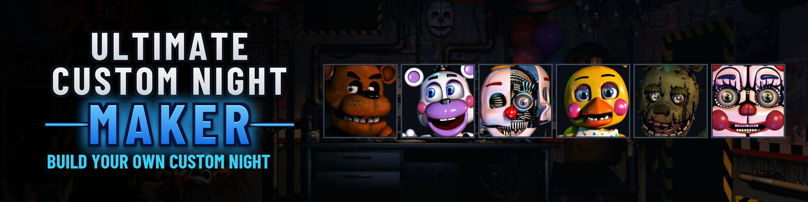

Build your own custom night: characters, game modes, offices and themes.
Version 2.0.0 · Free · Windows
Ultimate Custom Night Maker is a fan-made custom night built on top of Ultimate Custom Night. All 50 characters from UCN are in, playing by UCN's own rules: doors, vents, ducts, the heater, the power and noise meters, Faz-Coins and power-ups, and all 16 challenges.
The rest is up to you. Every character is a pack you can open in the in-game editor, change and save as your own, or you can start from nothing and make a new one. Packs can be exported as a single file or uploaded to mod.io straight from the game.
Load a portrait, animation frames, sounds and a jumpscare, pick how the character attacks, then test it in a night without leaving the editor.
Write your own AI from rules: when something happens, if these are true, do this. Timers, variables, pictures, clicks and sounds, no code needed.
Choose a roster and change the night itself: hour length, how many hours, starting power, power drain, heat, noise, coins, AI per hour and more.
Swap the office art or reskin the menus with your own backgrounds, logo, colours and music.
UCN's challenges for every mode, and you can save any AI setup as a challenge of your own.
Upload characters, modes, offices and themes from inside the game, and browse and install what other players made.
Packs made by players install from the MODS screen in the game, or from a .ucnpack file with
IMPORT in the Character Maker. Mods are made by their authors and are not part of UCN Maker.
UCN Maker is a free, non-commercial fan game and is not affiliated with or endorsed by Scott Cawthon or Steel Wool Studios. Five Nights at Freddy's and its characters belong to Scott Cawthon.